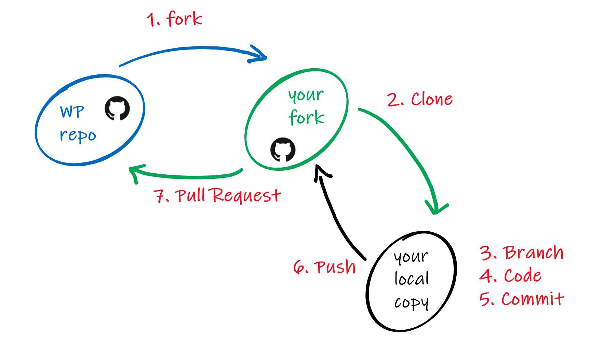

Reprodutibilidade em R e GitHub - Exercícios
NT265/NE441 - Análise de dados e apresentação de gráficos usando a linguagem R
26 de novembro de 2025
Conferindo os computadores
R (>4.5.x)
https://www.r-project.org
RStudio (>2025.9.x)
https://www.rstudio.com
git (>2.34.x)
https://git-scm.com


Prática 1
GitHub
Vamos criar uma conta no GitHub (caso não possuam)

Criando um repositório
Criar repositório: Perfil > Repositories > New

Criando um repositório
Criar um repositório
- Nome do repositório
- Descrição (opcional)
- Público ou privado
- Add um README.md
- Add .gitignore
- Licença
- Criar repositório

Prática 3
Criem uma página inicial para o perfil do GitHub

Prática 4
RStudio

Prática 4
RStudio
- Marque Enable version control interface…
- Git executable:
- Windows:
C:/Program Files/Git/bin/git.exe - Ubuntu:
/usr/bin/git - Mac:
/usr/bin/git

Prática 4
RStudio
Chave SSH
- Create SSH key (ED25519) (talvez RSA?)
- View public key
- Copiar: Ctrl + C

Prática 4
git
git config: definir as configurações de usuário do git- Terminal (colar com
ctrl + shift + v)

Controle de versão na prática
Duas formas de trabalhar com o git e GitHub
- Iniciando um projeto em nosso computador - localmente (git)
- Iniciando por um repositório remoto - remotamente (GitHub)


Controle de versão na prática
 
Controle de versão na prática

Controle de versão na prática


Prática 5
Diretório local
- Abram o
Terminaldo RStudio

Iniciando remotamente
Clonar: download de um repositório remoto (e.g. GitHub) para o seu repositório local (computador)

Iniciando remotamente
Primeiro, vamos criar uma pasta chamada github

Prática 7
Usando o Projeto do RStudio para clonar pelo SSH (configurado anteriormente)

Prática 7
Escolher clonar repositório do GitHub
Git

Prática 7
Preencher com dados do repositório do GitHub
Repository URL

Prática 7
Preencher:
- Repository URL:
git@github.com:mauriciovancine/teste.git - Project directory name:
preenchimento automático - Create project as subdirectory of:
/home/mude/data/github - Se uma janela aparecer, basta digitar “yes”
- Aguardar o download

Versionamento


Versionamento
Comandos git para o fluxo de trabalho dos repositórios


Versionamento
Fluxo do versionamento

Versionamento
Simplificado

Interface Gráfica do RStudio
Git Panel
- RStudio tem um cliente Git na aba “Git”
- Esse painel aparece em projetos que estejam versionados com git

Interface Gráfica do RStudio
Git pane - Staged

Interface Gráfica do RStudio
Git pane - Staged e File status

Interface Gráfica do RStudio
Git Panel - Diff - Changes: Revisar mudanças

Interface Gráfica do RStudio
Git pane - Commit

Interface Gráfica do RStudio
Git pane - Push e Pull

Prática 9
renv

Quarto
Arquivo Quarto (.qmd) - Anatomia
---
title: "Hello, Penguins"
format: html
execute:
echo: false
---
## Meet the penguins
The __penguins__ data contains size measurements for
penguins from three islands in the Palmer Archipelago,
Antarctica.
The _three_ species of penguins have quite distinct
distributions of physical dimensions (@fig-penguins).
#| label: fig-penguins
#| fig-cap: "Dimensions of penguins across three species."
#| warning: false
library(tidyverse, quietly = TRUE)
library(palmerpenguins)
penguins |>
ggplot(aes(x = flipper_length_mm, y = bill_length_mm)) +
geom_point(aes(color = species)) +
scale_color_manual(
values = c("darkorange", "purple", "cyan4")) +
theme_minimal()